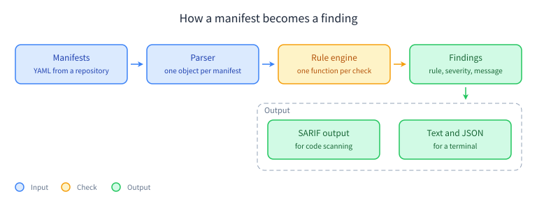

Designing k8s-audit
A scanner for Kubernetes manifests that prints one line per problem and exits non-zero when it finds one.
The problem
Most manifest review happens by reading YAML. That works until the manifest count grows past what one person can hold in their head, and then it happens through whatever review tool the team already has. The checks are not the problem. The problem is that a checklist, a policy document and someone's memory are the only places they live, and none of those run in CI.
k8s-audit is a small binary that reads a directory of manifests, evaluates a set of rules against them, and writes findings. It is meant to sit in a pull request, next to the linter and the test run.
What it checks
Every rule is one function that takes a parsed object and returns zero or more findings. There is no configuration file, no severity inheritance and no policy language. If a rule needs a decision, it is the wrong rule or the wrong tool.
The first eight checks are the ones I keep reaching for by hand when I look at a manifest I did not write:
- K8S-0001: the container runs as root
- K8S-0002: the container runs with
privileged: true - K8S-0003: the container shares the host network namespace
- K8S-0004: the container has no memory limit
- K8S-0005: the service account token is mounted by default
- K8S-0006: the image tag is not pinned to a digest
- K8S-0007: a capability is added beyond the default set
- K8S-0008: the root filesystem is writable
The mapping to the CIS Kubernetes Benchmark is not done yet, and I would rather say so than publish control numbers I have not checked against the document. That mapping is the next piece of work, not a detail.
How it works
Four stages, and nothing clever in any of them.

Parsing is deliberately shallow. Each file becomes one object, and a manifest that is not valid YAML is reported as a finding rather than as a crash. The rule engine gets a plain object and knows nothing about the file it came from, which keeps the rules easy to test and easy to read.


The kind of infrastructure the manifests describe. Photos: Moses Cursor Ssebunya (CC0), rawpixel (CC0), MTA Capital Construction (CC BY 2.0).
Output comes in two shapes. SARIF goes to GitHub code scanning, so a finding shows up on the pull request that introduced it. That is the only place anyone will actually read it. Text and JSON go to a terminal, for the person running it locally.
Out of scope
- Auto-fixing. A scanner that rewrites a manifest is a different tool with a different risk profile, and it deserves its own argument.
- Policy configuration. Severity is fixed per rule, chosen by me, and argued about in an issue if you disagree.
- Live cluster inspection. This reads files. What is actually running in a cluster is a different question with a different answer.
- A dashboard. A pull request comment is the interface.
Status
The rules exist as prose on the front page of this site, and the pipeline is decided. The code is not written yet. When it is, it will be MIT licensed, the rules will be the ones above, and the table on the front page will link straight at the implementation.
If you think one of these eight checks is wrong, or that a ninth one matters more, open an issue on the repository and say why. I would rather change the rule set now than defend it later.